4 Camera models
Here we briefly consider camera models, which are a key part of the physics-based perspective on visual data. A camera model describes how we get from the physical world (3D in space) to the image (2D in pixel coordinates). This mapping is often referred to as a perspective projection. We will not go into extensive details of camera models, but we will introduce some key concepts that will be useful for understanding the data and representing our location and tracking data in court coordinates (positions on the basketball court) rather than simply image coordinates (pixel locations in the image).
4.1 A simple camera model and perspective projection
The simplest camera model is the pinhole camera model. We represent the camera as an opaque box with a small opening on one side and a light-sensitive surface—the sensor—on the opposite side.
Light is emitted or reflected from objects in the scene and travels approximately in straight lines between interactions with other objects. At a given location, light can arrive from many different directions. An exposed sensor would combine contributions from these directions, rather than record a separate image location for each part of the scene.
The camera body blocks most of these paths. Only light passing through the pinhole can reach the sensor. If we idealise the pinhole as a single point, each location on the sensor receives light along one line passing through that point. Different viewing directions therefore correspond to different sensor locations.
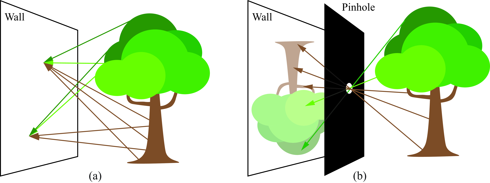
The image is inverted because the light paths cross at the pinhole. Follow a ray from the upper part of the tree: it travels downwards towards the opening and continues downwards after passing through it, reaching the lower part of the image plane. Similarly, light from the lower part of the tree reaches the upper part of the image plane. The light does not change direction at the pinhole; each ray simply continues along the same straight line.
4.2 Geometry of the pinhole camera model
Choose a single point on the sensor and trace its light path backwards, through the pinhole and into the scene. This gives a viewing line along which the observed surface point must lie.
Different scene points along this line would project to the same sensor location. The image location therefore identifies a viewing direction, but does not by itself tell us how far away the surface is. In this sense, projection from the three-dimensional scene to the two-dimensional image loses depth information.
4.2.1 A virtual image plane
The sensor lies behind the pinhole, where the light forms an inverted image. For the geometry, however, it is convenient to represent the image on an imaginary plane in front of the pinhole. We call this the virtual image plane.
To construct it, take the same viewing lines and mark where they intersect this front plane. A line from the upper part of the scene intersects the front plane above the pinhole, before continuing through the hole to the lower part of the sensor. The front-plane representation is therefore upright.
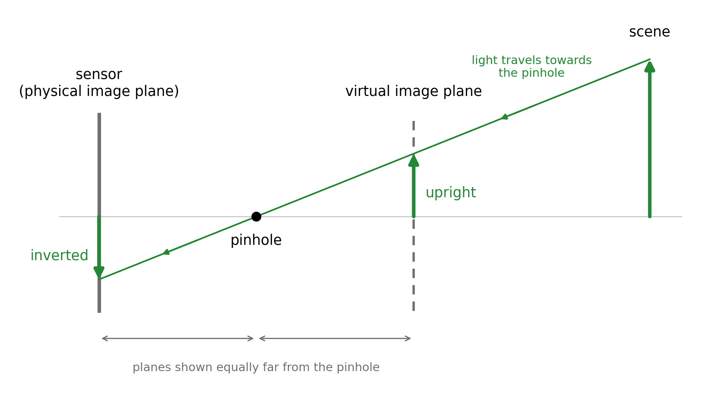
We have not moved the sensor or changed the light paths admitted by the pinhole. We have simply chosen different points along those same lines to represent the image. At each virtual image point, we associate the value recorded at the corresponding sensor point; we do not include the other light that would reach an actual screen placed there.
4.2.2 Coordinates relative to the camera
To describe the geometry mathematically, place the origin at the pinhole. Let the \(Z_c\)-axis point forwards, perpendicular to the image planes, and let the \(X_c\)- and \(Y_c\)-axes run in two perpendicular directions parallel to those planes. A scene point then has coordinates \((X_c,Y_c,Z_c)\). The subscript \(c\) indicates that these coordinates are measured relative to the camera.
Let \(f>0\) be the distance from the pinhole to either image plane, called the focal length in this pinhole model. The virtual image plane is at \(Z_c=f\), while the physical sensor is at \(Z_c=-f\). A point on the virtual image plane therefore has three-dimensional coordinates \((x,y,f)\). Since its last coordinate is fixed, we can describe its position within that plane using just the two coordinates \((x,y)\).
4.2.3 Points along a viewing line
The position vector from the pinhole \((0,0,0)\) to a scene point is \((X_c,Y_c,Z_c)\). Taking different multiples of this vector gives points along the line through the pinhole and the scene point. The coordinates of any point on this line can therefore be written as \[ (tX_c,tY_c,tZ_c). \]
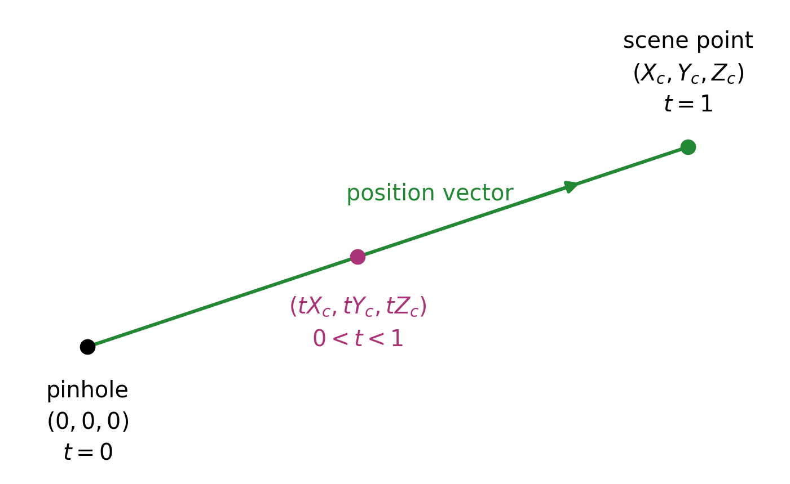
At \(t=0\), we are at the pinhole; at \(t=1\), we are at the scene point. Values between 0 and 1 give points between them. Negative values continue along the same line behind the pinhole.
4.2.4 Perspective projection
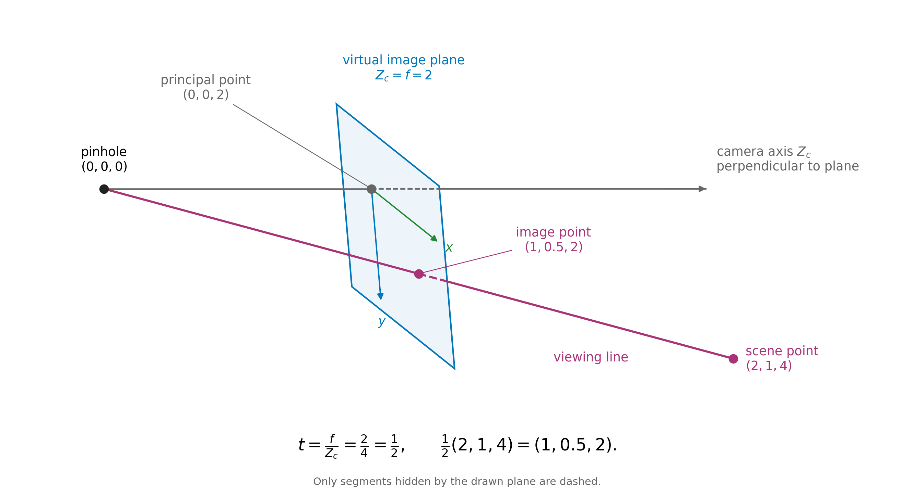
The virtual image plane is at \(Z_c=f\). To find where the viewing line meets this plane, we set the third coordinate of \((tX_c,tY_c,tZ_c)\) equal to \(f\): \[ tZ_c=f \quad\Longrightarrow\quad t=\frac{f}{Z_c}. \] Substituting this value of \(t\) gives the intersection \[ \left(f\frac{X_c}{Z_c},\;f\frac{Y_c}{Z_c},\;f\right). \] The first two coordinates give the position within the image plane. Thus the perspective projection of the scene point has image coordinates \[ \boxed{x=f\frac{X_c}{Z_c},\qquad y=f\frac{Y_c}{Z_c}.} \]
For the physical sensor, we instead set the third coordinate equal to \(-f\): \[ tZ_c=-f \quad\Longrightarrow\quad t=-\frac{f}{Z_c}. \] The intersection is then \[ \left(-f\frac{X_c}{Z_c},\;-f\frac{Y_c}{Z_c},\;-f\right). \] The first two coordinates change sign, giving the inverted image.
4.2.5 Example
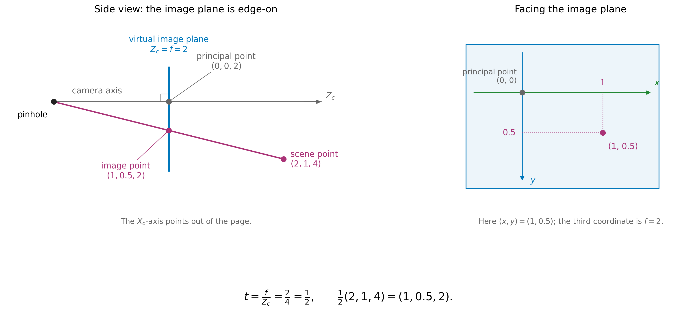
Take \(f=2\) and a scene point with camera coordinates \((2,1,4)\), using the same units for all distances. The viewing line meets the virtual image plane when \[ t=\frac{f}{Z_c}=\frac{2}{4}=\frac12. \] The intersection is therefore \[ \frac12(2,1,4)=\left(1,\frac12,2\right). \] Its third coordinate is \(f=2\), as required, and its image coordinates are \[ (x,y)=\left(1,\frac12\right). \]
Now consider the scene point \((4,2,8)\), twice as far along the same viewing line. This time, \[ t=\frac{2}{8}=\frac14, \] giving \[ \frac14(4,2,8)=\left(1,\frac12,2\right). \] The two scene points lie at different distances from the camera but have the same image coordinates. Knowing \(f\) has allowed us to locate the image point, but has not identified which scene point along the viewing line produced it.
4.3 Homogeneous coordinates
We first express the image-plane distances in units of \(f\), by dividing both coordinates by \(f\): \[ x_n=\frac{x}{f}=\frac{X_c}{Z_c}, \qquad y_n=\frac{y}{f}=\frac{Y_c}{Z_c}. \] We call these normalised image coordinates. Normalising here means dividing by the common scale \(f\).
The two ratios share a denominator, \(Z_c\). Rather than carrying out the divisions immediately, we can keep the two numerators and their common denominator together as three numbers: \[ (X_c,Y_c,Z_c). \] For example, the triple \((2,1,4)\) represents the normalised image point \[ \left(\frac{2}{4},\frac{1}{4}\right). \] The triple \((4,2,8)\) represents the same point, since \[ \left(\frac{4}{8},\frac{2}{8}\right) = \left(\frac{2}{4},\frac{1}{4}\right). \] Multiplying all three entries by the same nonzero number leaves both ratios unchanged.
We call these triples homogeneous coordinates for the image point. In this representation, we use only the ratios between the entries. The triples \((2,1,4)\) and \((4,2,8)\) describe different physical positions when read as camera coordinates, but the same image point when read as homogeneous coordinates.
We can choose a representation with third entry equal to 1 by dividing all three entries by \(Z_c\): \[ \frac{1}{Z_c}(X_c,Y_c,Z_c) = \left(\frac{X_c}{Z_c},\frac{Y_c}{Z_c},1\right) = (x_n,y_n,1). \] The first two entries are then the normalised image coordinates themselves.
Homogeneous coordinates are a standard tool in projective geometry. We will use them to describe perspective mappings between the court and image planes. The subject has roots in perspective drawing, including Desargues’s seventeenth-century work, and developed into a distinct field in the nineteenth century (“Girard Desargues” 2020; O’Connor and Robertson 2008).
4.4 Different coordinate systems
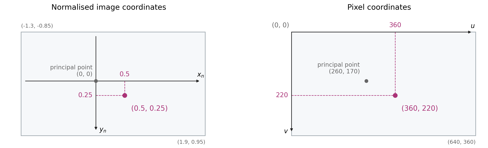
4.4.1 Pixel coordinates
So far, \((x,y)\) describes distances within the image plane, while \((x_n,y_n)\) describes those distances divided by \(f\). In a digital image, we usually specify a location by its pixel column and row. We denote these pixel coordinates by \((u,v)\), as illustrated in Figure 4.6.
We take \((u,v)=(0,0)\) at the top-left pixel, with \(u\) increasing to the right and \(v\) increasing downwards. For an image stored as an array, the pixel at column \(u\) and row \(v\) is accessed as image[v, u].
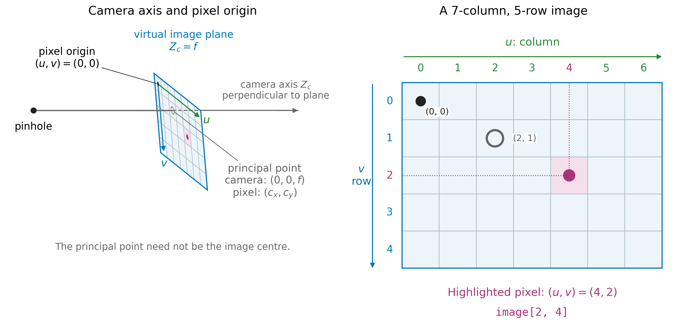
image[2, 4].
The origin of our image-plane coordinates is where the \(Z_c\)-axis meets the plane: the point \((0,0,f)\), which has \((x,y)=(0,0)\). The corresponding image location is called the principal point. We denote its pixel coordinates by \((c_x,c_y)\).
Thus the same image location has coordinates \((0,0)\) when measured from the image-plane origin, but \((c_x,c_y)\) when measured from the top-left pixel.
4.4.2 From image-plane coordinates to pixels
We choose the positive \(x\)- and \(y\)-directions to match the pixel directions: rightwards and downwards.
Let \(s_x\) and \(s_y\) be the image-plane distances corresponding to one pixel in each direction. A displacement \(x\) therefore corresponds to \(x/s_x\) pixels horizontally, and a displacement \(y\) corresponds to \(y/s_y\) pixels vertically.
These displacements are measured from the principal point. Adding its pixel coordinates gives \[ \boxed{ u=\frac{x}{s_x}+c_x, \qquad v=\frac{y}{s_y}+c_y. } \]
The division converts the distances into pixel units; adding \((c_x,c_y)\) expresses the location relative to the top-left pixel.
4.4.3 A worked camera-to-pixel example
Return to the scene point with camera coordinates \((2,1,4)\) and the virtual image plane at \(Z_c=f=2\). Its viewing line meets the image plane at \((1,0.5,2)\), so its coordinates within that plane are \((x,y)=(1,0.5)\).
Dividing these image-plane coordinates by \(f\) gives \[ (x_n,y_n)=\left(\frac{1}{2},\frac{0.5}{2}\right)=(0.5,0.25). \]
Recall that the principal point is where the camera’s \(Z_c\)-axis meets the image plane.
For this example, take 200 pixels per normalised unit in each direction and place the principal point at pixel coordinates \((260,170)\). The pixel location is then \[ u=200(0.5)+260=360, \qquad v=200(0.25)+170=220. \]
The stages of the calculation are:
| Stage | Coordinates | What they describe |
|---|---|---|
| Scene point in camera coordinates | \((2,1,4)\) | The scene point’s position relative to the pinhole. |
| Intersection with the virtual image plane | \((1,0.5,2)\) | The projected point on the plane \(Z_c=2\); its coordinates within the plane are \((1,0.5)\). |
| Normalised image coordinates | \((0.5,0.25)\) | The image-plane coordinates divided by \(f\). |
| Pixel coordinates | \((360,220)\) | The projected image location measured in pixels from the top-left origin. |
The grey mark in Figure 4.6 is the principal point. It has normalised coordinates \((0,0)\) and pixel coordinates \((260,170)\). The top-left pixel origin instead has normalised coordinates \[ \left(\frac{0-260}{200},\frac{0-170}{200}\right)=(-1.3,-0.85). \]
The rectangles in Figure 4.6 show the chosen image window. Their corner labels give its bounds in each coordinate system.
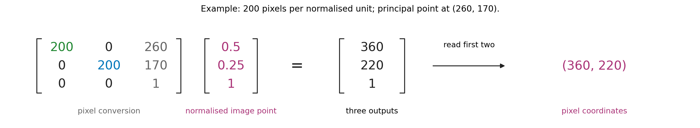
The calculation in Figure 4.8 writes the normalised image point as the homogeneous triple \((0.5,0.25,1)\). The matrix scales the first two coordinates and adds the principal-point offset. Its output is \((360,220,1)\), giving pixel coordinates \((360,220)\).
4.5 Homography
4.5.1 Connecting the image plane and the court plane
The basketball court floor can be modelled as a plane. Together with the image plane, this gives us two planes connected by viewing lines through the camera’s pinhole.
Choose a point on the court and draw its viewing line towards the pinhole. Where this line intersects the image plane gives the corresponding image point. We can also follow the line back from the image towards the court. Its intersection with the court plane gives the corresponding court point.
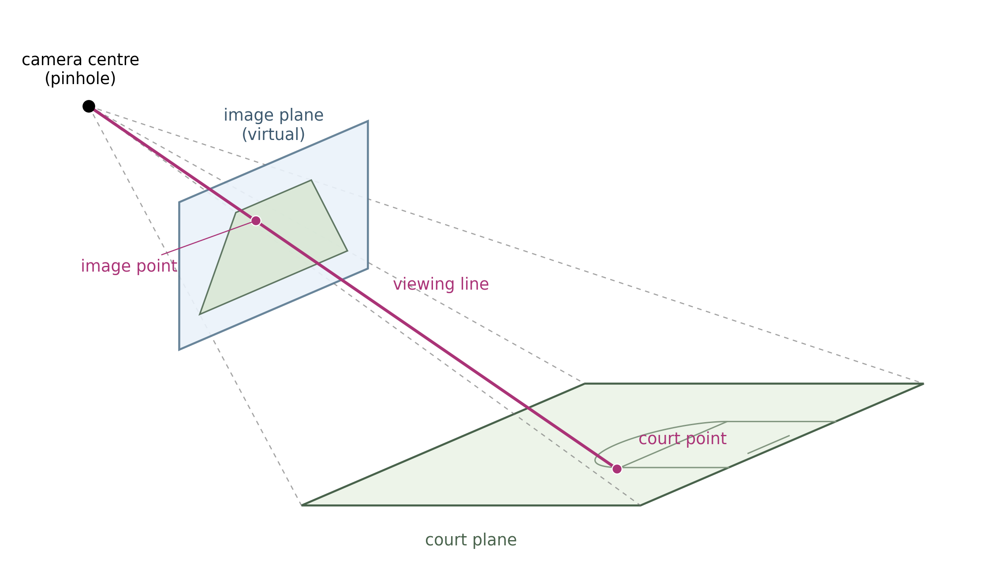
Which image point corresponds to which court point depends on the relative arrangement of the camera and the two planes. Once this relationship is established, we can map an image location directly to a location on the court.
The resulting mapping between the two planes is called a planar homography. For our basketball application, we want this mapping to take image coordinates in pixels to court coordinates in metres. To determine the mapping for our camera, we will use court landmarks whose positions are known both in the image and on the court.
4.5.2 What does the mapping preserve?
The court has ordinary lengths and angles, but these need not be preserved in its image. Equal court distances can occupy different numbers of pixels, and parallel court lines can appear to converge.
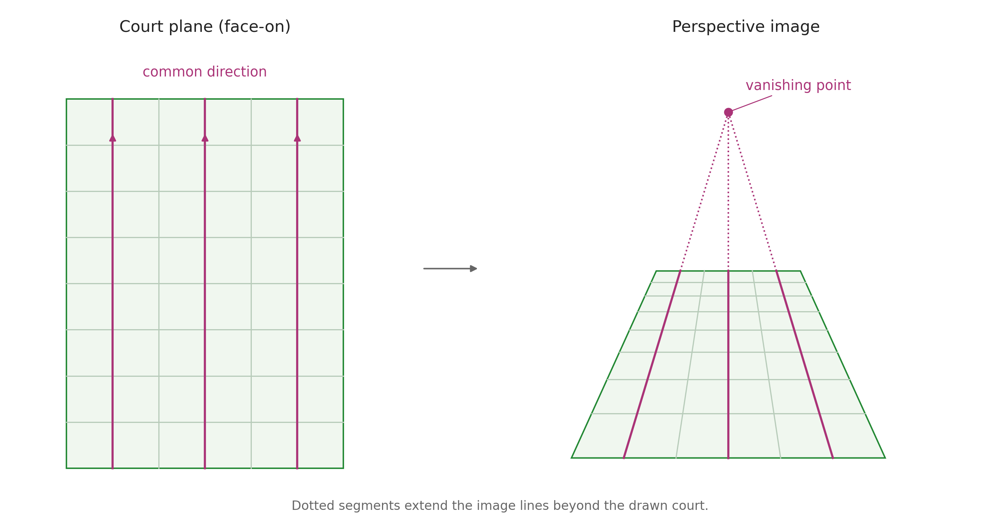
Different classes of transformations preserve different properties:
| Transformation | Some preserved properties |
|---|---|
| Euclidean (rigid motions) | Lengths and angles |
| Affine | Straight lines and parallelism |
| Projective (homographies) | Straight lines and point–line incidence |
Here incidence means which points lie on which lines. Euclidean transformations are special cases of affine transformations, which are themselves special cases of projective transformations.
Our conversion from image-plane coordinates to pixels is affine: it rescales the coordinates and shifts their origin. The court-to-image homography can also change parallelism. Homogeneous coordinates let us describe both mappings using matrices.
A family of parallel court lines shares a direction. Projective geometry represents that direction as a point at infinity on the court plane. The homography can map it to a finite image point—the vanishing point towards which the image lines converge.
4.5.3 From court coordinates to camera coordinates
We describe a position on the court by two coordinates \((X,Y)\), measured in metres from a chosen court corner, with the axes along the court edges.
To reach a court point from the camera’s pinhole, we can first go to the court origin, then move along the two court directions. The vector to the court origin is fixed. Each court direction is also fixed; the distances travelled along them are \(X\) and \(Y\).
Adding these three displacements gives the position vector of the court point relative to the camera, as shown in Figure 4.11.
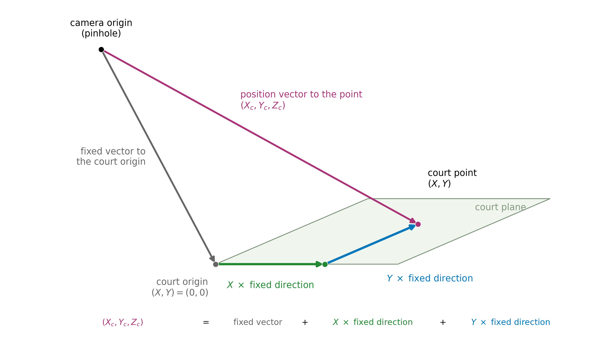
Write the three camera-coordinate components of a one-unit displacement along the court’s \(X\) direction as \((a_1,a_2,a_3)\), and along its \(Y\) direction as \((b_1,b_2,b_3)\). Write the vector from the pinhole to the court origin as \((d_1,d_2,d_3)\).
As in ENGSCI 205, a matrix multiplied by a vector gives a linear combination of its columns. We therefore place these three fixed vectors in the columns of a matrix, as shown in Figure 4.12. The offset column is multiplied by 1.
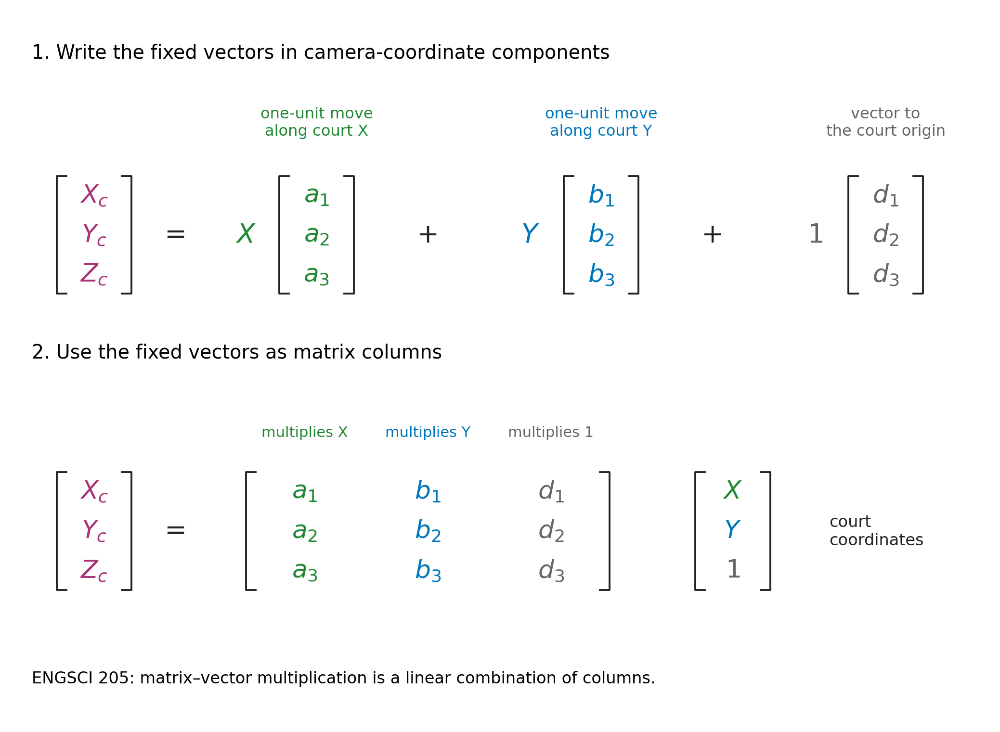
Calling this matrix \(A\), we have \[ \begin{bmatrix}X_c\\Y_c\\Z_c\end{bmatrix} = A\begin{bmatrix}X\\Y\\1\end{bmatrix}. \]
4.5.4 From these outputs to the image
We can now use our earlier perspective-projection result. The normalised image coordinates are \[ (x_n,y_n)=\left(\frac{X_c}{Z_c},\frac{Y_c}{Z_c}\right). \]
Thus the three outputs of \(A\) also serve as homogeneous coordinates for the normalised image point. Multiplication by \(A\), followed by division by its third output, gives the court-to-normalised-image homography.
4.5.5 Including the pixel conversion
To obtain pixel coordinates, we apply the scale and offset introduced earlier. For the horizontal coordinate, \[ u=\frac{f}{s_x}\frac{X_c}{Z_c}+c_x =\frac{(f/s_x)X_c+c_xZ_c}{Z_c}. \]
The numerator is a weighted sum of \(X_c\) and \(Z_c\). The vertical coordinate has the corresponding form \[ v=\frac{(f/s_y)Y_c+c_yZ_c}{Z_c}. \]
Each camera coordinate is already a linear combination of \(X,Y,1\). These two numerators and their common denominator are therefore also linear combinations of \(X,Y,1\). We collect their coefficients into a \(3\times3\) matrix \(G\): \[ G\begin{bmatrix}X\\Y\\1\end{bmatrix} = \begin{bmatrix} (f/s_x)X_c+c_xZ_c\\ (f/s_y)Y_c+c_yZ_c\\ Z_c \end{bmatrix}. \]
Dividing the first two outputs by the third gives \((u,v)\). This is the court-to-pixel homography. The pixel conversion changes the coordinate units and origin within the image; it does not introduce another physical image plane.
4.5.6 From pixels back to the court
Our basketball task starts with an image location and asks where it lies on the court. For our camera above the court, the planar mapping can be reversed. We use the inverse matrix \[ H=G^{-1}. \]
Given pixel coordinates \((u,v)\), multiply \[ \begin{bmatrix}a\\b\\c\end{bmatrix} = H\begin{bmatrix}u\\v\\1\end{bmatrix}. \]
The three outputs are homogeneous coordinates for the court point. Dividing the first two by the third gives \[ X=\frac{a}{c},\qquad Y=\frac{b}{c},\qquad c\ne0. \]
For example, the output \((6,8,2)\) represents court coordinates \((3,4)\) metres.
We will determine \(H\) directly from landmarks whose positions are known both in the image and on the court. Once \(H\) is known, this calculation takes pixel coordinates as its input and returns court coordinates. We do not need to recover each camera parameter separately to use it.
4.5.7 How many landmarks do we need?
A general planar homography has nine matrix entries. Multiplying all nine by a common nonzero factor scales all three outputs together, leaving their ratios unchanged. The mapping therefore has eight independent parameters.
Each matched landmark supplies two equations: one for its court \(X\)-coordinate and one for its \(Y\)-coordinate. Four point correspondences therefore supply the eight equations needed to determine the homography, up to its irrelevant overall scale.
The four points must be distinct, with no three on a straight line, in either the image or the court. Otherwise the constraints do not determine the mapping uniquely.
Choose landmarks spread across the court. With more than four correspondences, we can fit a homography that accommodates annotation error; additional landmarks withheld from fitting provide an independent check.
4.5.8 From a player box to a court position
To estimate a player’s position on the court, we need an image point representing their contact with the floor. We use the bottom-centre of the bounding box as an approximation.
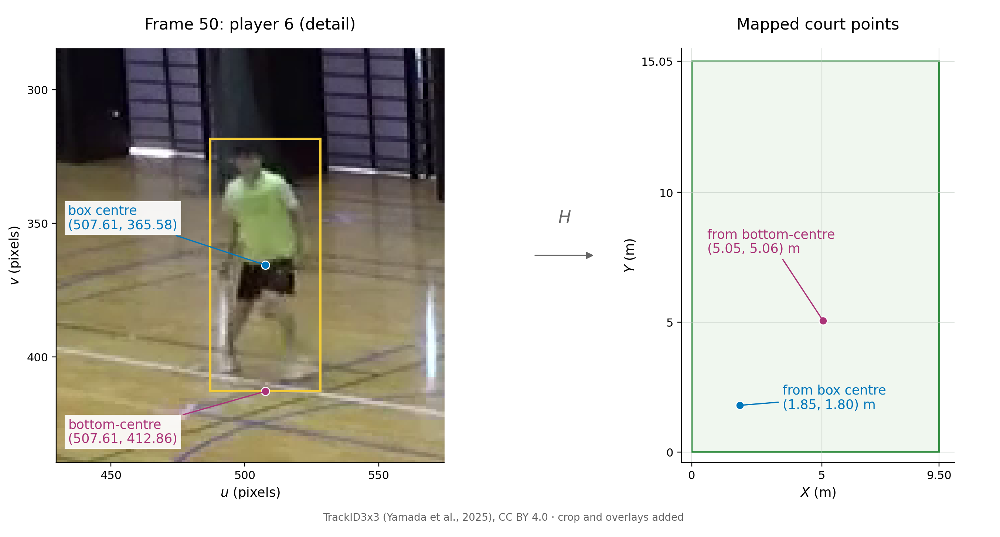
For player 6 in frame 50, the box is [487.03, 318.30, 528.19, 412.86] in the format [u_min, v_min, u_max, v_max]. Its bottom-centre is therefore \((u,v)=(507.61,412.86)\).
Here we use a pre-supplied matrix \(H\), computed for this camera from the four court-landmark correspondences in TrackID3x3. The matrix and the transform_points helper are included in the accompanying court_mapping.py. Place this file in your working folder, or upload it to Colab’s Files pane.
The helper accepts image points as rows of an array and returns the corresponding court points, performing the matrix multiplication and final division.
from court_mapping import H, transform_points
box = [487.03, 318.30, 528.19, 412.86]
u = (box[0] + box[2]) / 2
v = box[3]
court_point = transform_points([[u, v]], H)[0]
print(f"({court_point[0]:.2f}, {court_point[1]:.2f}) m")(5.05, 5.06) mMapping the box centre \((507.61,365.58)\) gives court coordinates \((1.85,1.80)\) m. Changing the image point moves the mapped position by about \(4.57\) m.
As you might imagine, player ‘pose’, foot placement and box placement affect how well the bottom-centre represents ground contact.
4.5.9 Checking the court positions
Return to the eight saved person detections in frame 50, using a confidence threshold of 0.50. We can map every box’s bottom-centre using the same matrix \(H\).
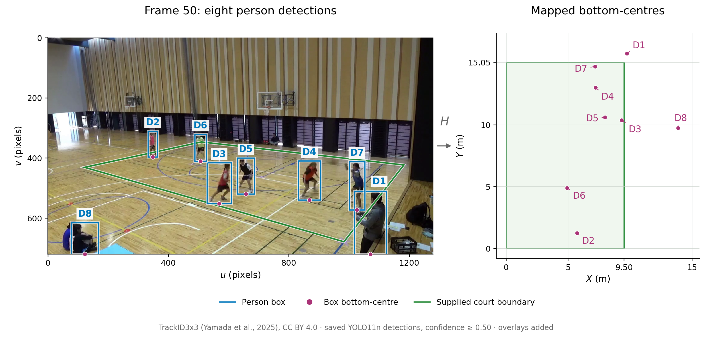
A simple court-based filter keeps detections whose mapped points satisfy \[
0\leq X\leq 9.50,\qquad 0\leq Y\leq 15.05,
\] with distances in metres. This retains six detections, D2–D7, in this frame; D1 and D8 lie outside the rectangle. The detector’s person class includes people at the sidelines, while our task concerns the active on-court players.
D3 maps to \((9.33,10.38)\) m, only about \(0.17\) m inside the edge \(X=9.50\). Decisions near a boundary can be sensitive to box placement and calibration. D1 and D8 both reach the bottom of the image, where their bottom-centres give uncertain estimates of ground contact.
When a position looks questionable, inspect the box and its bottom-centre in the image. Additional landmarks with known court positions would help check the calibration separately from the detector. The supplied \(H\) also depends on the camera staying in place and on using the same image coordinate system. We will evaluate the retained detections against the player annotations.